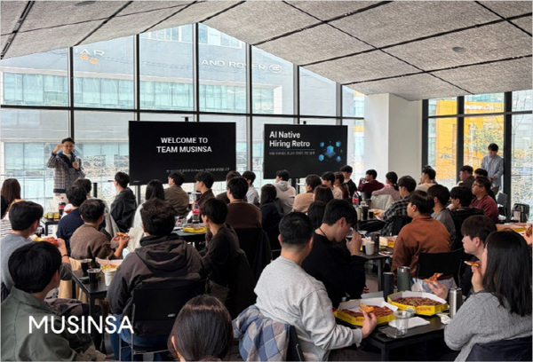
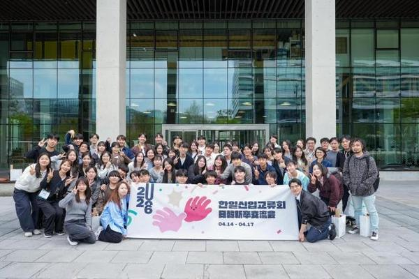

신입사원 교육
신입사원 교육, 이제 ‘적응’만으로는 부족해요 👀
요즘 온보딩은 회사 소개를 넘어 AI 활용력·협업 경험·현장 적응력까지 함께 키우는 방향으로 바뀌고 있어요.

🔎 통합되는 인사이트
신입사원 교육의 초점이 달라지고 있어요. 예전에는 “우리 회사는 이런 곳이에요”를 알려주는 데 집중했다면, 이제는 신입이 실제로 어떻게 일하고, 협업하고, 기술을 활용할지까지 다루고 있어요.
- 🤖 AI 활용 역량이 신입 단계부터 중요해졌어요.
- 🤝 온보딩이 협업 경험 설계로 확장되고 있어요.
- 🏢 교육장 교육 이후 현장 OJT 연결이 더 중요해졌어요.
🗞️ 함께 보면 좋은 기사

무신사, AI 네이티브 신입 개발자 육성 시작 🤖
무신사는 신입 개발자 채용에서 단순 코딩 실력보다 AI 도구로 실무 문제를 해결하는 능력을 봤어요. 이제 신입에게도 AI 활용력은 선택이 아니라 기본 역량이 되고 있어요.

NHN, 한일 신입 교류회 운영 🌏
NHN은 한국·일본 법인 신입사원이 함께하는 교류회를 운영했어요. 단순 친목이 아니라 AI 도구를 활용한 팀 미션으로 글로벌 협업 경험까지 설계했어요.

한국도로공사서비스, 신입사원 조기전력화 🛣️
입문교육 후 권역본부별 현장 중심 OJT를 진행했어요. 교육장에서 끝나는 온보딩이 아니라 실제 근무 환경에 빠르게 적응하도록 연결한 사례예요.

〈승부〉로 읽는 신입 온보딩 모델 🌱
온보딩을 단순 규범 안내가 아니라, 신입이 조직 안에서 자기 방식으로 성장하는 여정으로 봐요. 신입 교육을 더 깊게 설계할 때 참고하기 좋아요.
💡 정리하면
신입사원 교육은 이제 “회사에 적응시키는 과정”을 넘어, 일하는 방식을 익히고 실무에 연결하는 과정으로 바뀌고 있어요.
우리 부서에서 활용한다면
- 🤖 AI 도구 활용 기본 실습
- 🤝 팀 미션 기반 협업 과제
- 🏢 현장 OJT와 선배 멘토링
- 🌱 조직 안에서 나의 역할 정의하기
- 📌 입사 후 30일·60일·90일 성장 체크인